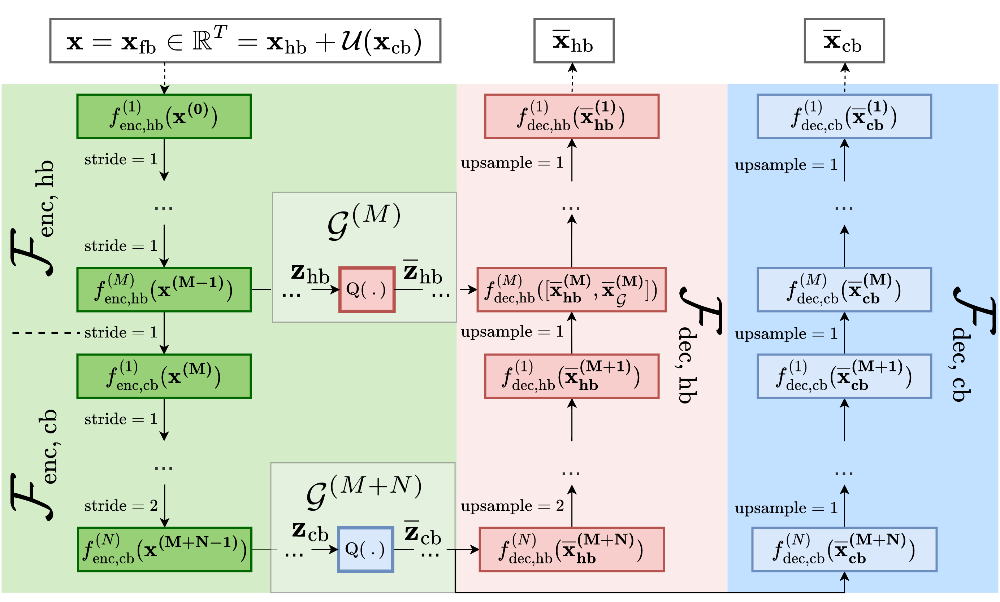

Projects
-
ICASSP 2024: Hyperbolic Distance-Based Speech Separation
We explore the task of hierarchical distance-based speech separation defined on a hyperbolic manifold.
-
Tackling the Cocktail Fork Problem for Separation and Transcription of Real-World Soundtracks in IEEE/ACM Transactions on Audio, Speech, and Language Processing
We extend the cocktail fork source separation formulation by tackling transcription for each of the three sources involved: audio tagging for music and sound effect, and ASR for speech
-

[Best paper Award!]
ICASSP 2023: Hyperbolic Audio Source SeparationOur ICASSP paper on audio source separation using embeddings on a hyperbolic manifold won the best student paper award!
-
 ICASSP 2023: Multi-Band Neural Audio Coding
A multi-band approach to neural audio coding, which exploits the U-Net upsampling capabilities and offers band-specific bitrate assignments.
-
ICASSP 2022: SpaIn-Net: Spatially Informed Music Source Separation
We present an interactive music source separation system allowing a user to specify the spatial location of the instruments of interest. We explore various conditioning mechanisms ranging from simple concatenation to positional encoding and AdaIN.
-
ICASSP 2022: The Cocktail Fork Problem: Three-Stem Audio Separation for Real-World Soundtracks
We introduce a new source separation dataset, "Divide and Remaster" (DnR), for training and testing algorithms aiming at separating monaural audio signals into speech, music, and sound effects/background stems.
-
WASPAA 2021: Accepted Paper on Neural Audio Coding
Our paper entitled "HARP-Net: Hyper-Autoencoded Reconstruction Propagation for Scalable Neural Audio Coding" has been accepted to the IEEE Workshop on Applications of Signal Processing to Audio and Acoustics.
-
ISMIR 2020: SATB Voice Separation
Our paper entitled "Deep Learning Based Source Separation Applied to Choir Ensembles" has been accepted to the 21st International Society for Music Information Retrieval Conference.
-
Generative Music in C
A simple yet powerful program written in C for algorithmic music generation.